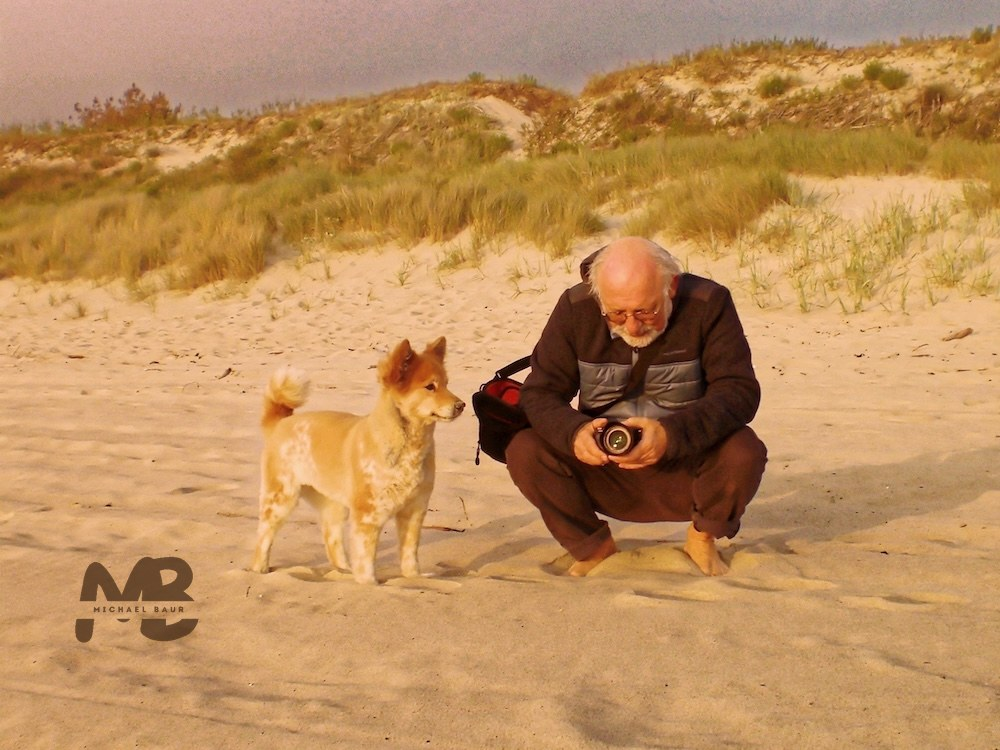
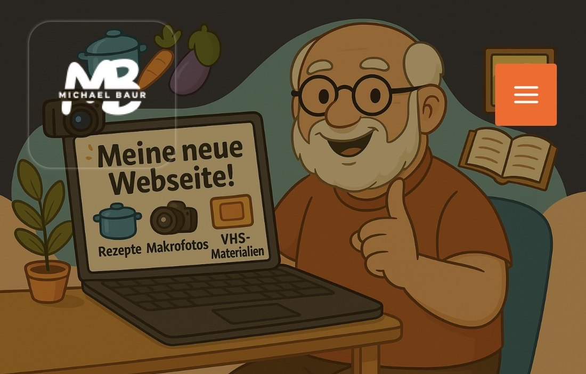

35 Jahre lang arbeitete ich als Biologielehrer an der Gesamtschule Hungen. Außerdem war ich für das Land Hessen in der Redaktion des Hessischen Bildungsservers und als Fachberater für Medienkompetenz tätig.
Auch im Ruhestand ist meine Begeisterung für Natur, Fotografie und neue Medien ungebrochen. Heute bleibt endlich Zeit für Projekte, die im Berufsalltag oft zu kurz kamen: beobachten, fotografieren, gestalten, erklären und Neues ausprobieren.
So entstanden nach und nach mibaso.de, flora.mibaso.de, fauna.mibaso.de, kleine Lern-Apps, Quizideen und naturkundliche Materialien für Interessierte, Schulen, Exkursionen und für meine VHS-Kurse.
Diese App ist handgeprüft, aber nicht handgeschnitzt: Einige Inhalte entstanden mit KI-Unterstützung und wurden anschließend von mir überarbeitet.
Mehr Projekte und Material gibt es auf mibaso.de.
